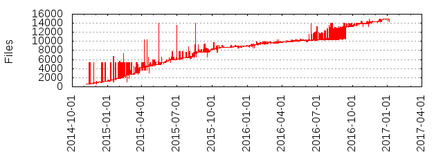

Files
- Total files
- 14971
- Total lines
- 3169015
- Average file size
- 9711.39 bytes
| Extension | Files (%) | Lines (%) | Lines/file |
|---|
| 37 (0.25%) | 3731 (0.12%) | 100 |
| 3 | 1 (0.01%) | 151 (0.00%) | 151 |
| StyleCop | 1 (0.01%) | 28 (0.00%) | 28 |
| TXT | 1 (0.01%) | 46 (0.00%) | 46 |
| ashx | 11 (0.07%) | 40 (0.00%) | 3 |
| bat | 8 (0.05%) | 249 (0.01%) | 31 |
| bin | 2 (0.01%) | 0 (0.00%) | 0 |
| bmp | 2 (0.01%) | 0 (0.00%) | 0 |
| bsl | 1 (0.01%) | 47 (0.00%) | 47 |
| builds | 512 (3.42%) | 7016 (0.22%) | 13 |
| c | 26 (0.17%) | 16614 (0.52%) | 639 |
| ccproj | 1 (0.01%) | 61 (0.00%) | 61 |
| cd | 2 (0.01%) | 125 (0.00%) | 62 |
| centos | 1 (0.01%) | 11 (0.00%) | 11 |
| cmake | 10 (0.07%) | 673 (0.02%) | 67 |
| cmakein | 2 (0.01%) | 526 (0.02%) | 263 |
| cmd | 17 (0.11%) | 399 (0.01%) | 23 |
| com | 1 (0.01%) | 867 (0.03%) | 867 |
| conf | 5 (0.03%) | 297 (0.01%) | 59 |
| config | 9 (0.06%) | 196 (0.01%) | 21 |
| cpp | 57 (0.38%) | 13943 (0.44%) | 244 |
| cs | 10631 (71.01%) | 2957439 (93.32%) | 278 |
| cscfg | 2 (0.01%) | 34 (0.00%) | 17 |
| csdef | 1 (0.01%) | 26 (0.00%) | 26 |
| csproj | 548 (3.66%) | 32963 (1.04%) | 60 |
| csv | 2 (0.01%) | 514 (0.02%) | 257 |
| cxx | 3 (0.02%) | 3134 (0.10%) | 1044 |
| def | 1 (0.01%) | 10 (0.00%) | 10 |
| depproj | 16 (0.11%) | 222 (0.01%) | 13 |
| dll | 26 (0.17%) | 794 (0.03%) | 30 |
| dtd | 9 (0.06%) | 7151 (0.23%) | 794 |
| ent | 6 (0.04%) | 1026 (0.03%) | 171 |
| exe | 4 (0.03%) | 136 (0.00%) | 34 |
| gif | 1 (0.01%) | 525 (0.02%) | 525 |
| groovy | 1 (0.01%) | 430 (0.01%) | 430 |
| h | 80 (0.53%) | 14803 (0.47%) | 185 |
| htm | 1 (0.01%) | 14 (0.00%) | 14 |
| html | 1 (0.01%) | 11 (0.00%) | 11 |
| il | 5 (0.03%) | 445 (0.01%) | 89 |
| ilproj | 2 (0.01%) | 23 (0.00%) | 11 |
| imp | 3 (0.02%) | 22 (0.00%) | 7 |
| in | 5 (0.03%) | 890 (0.03%) | 178 |
| included | 1 (0.01%) | 511 (0.02%) | 511 |
| jessie | 1 (0.01%) | 7 (0.00%) | 7 |
| json | 412 (2.75%) | 21580 (0.68%) | 52 |
| leases | 1 (0.01%) | 13 (0.00%) | 13 |
| map | 1 (0.01%) | 83 (0.00%) | 83 |
| md | 58 (0.39%) | 5819 (0.18%) | 100 |
| mod | 3 (0.02%) | 93 (0.00%) | 31 |
| msbuild | 1 (0.01%) | 48 (0.00%) | 48 |
| nlp | 1 (0.01%) | 1228 (0.04%) | 1228 |
| obj | 1 (0.01%) | 12 (0.00%) | 12 |
| old | 1 (0.01%) | 1118 (0.04%) | 1118 |
| opensuse | 1 (0.01%) | 18 (0.00%) | 18 |
| p | 6 (0.04%) | 2576 (0.08%) | 429 |
| patch | 1 (0.01%) | 33 (0.00%) | 33 |
| pdb | 2 (0.01%) | 1 (0.00%) | 0 |
| pdf | 1 (0.01%) | 175 (0.01%) | 175 |
| pfx | 1 (0.01%) | 7 (0.00%) | 7 |
| pkgproj | 299 (2.00%) | 5897 (0.19%) | 19 |
| png | 7 (0.05%) | 1968 (0.06%) | 281 |
| proj | 7 (0.05%) | 512 (0.02%) | 73 |
| props | 168 (1.12%) | 1954 (0.06%) | 11 |
| ps1 | 17 (0.11%) | 1652 (0.05%) | 97 |
| pubxml | 2 (0.01%) | 32 (0.00%) | 16 |
| py | 1 (0.01%) | 50 (0.00%) | 50 |
| rc | 2 (0.01%) | 8 (0.00%) | 4 |
| resx | 130 (0.87%) | 37809 (1.19%) | 290 |
| ruleset | 1 (0.01%) | 38 (0.00%) | 38 |
| sh | 19 (0.13%) | 2162 (0.07%) | 113 |
| sln | 144 (0.96%) | 8105 (0.26%) | 56 |
| snk | 2 (0.01%) | 8 (0.00%) | 4 |
| targets | 9 (0.06%) | 692 (0.02%) | 76 |
| trusty | 3 (0.02%) | 31 (0.00%) | 10 |
| tt | 4 (0.03%) | 3511 (0.11%) | 877 |
| ttinclude | 1 (0.01%) | 68 (0.00%) | 68 |
| txt | 366 (2.44%) | 69932 (2.21%) | 191 |
| ubuntu | 1 (0.01%) | 16 (0.00%) | 16 |
| vb | 28 (0.19%) | 18057 (0.57%) | 644 |
| vbproj | 1 (0.01%) | 53 (0.00%) | 53 |
| vcxproj | 1 (0.01%) | 64 (0.00%) | 64 |
| vivid | 3 (0.02%) | 31 (0.00%) | 10 |
| vssettings | 1 (0.01%) | 74 (0.00%) | 74 |
| wadcfgx | 2 (0.01%) | 76 (0.00%) | 38 |
| wily | 3 (0.02%) | 31 (0.00%) | 10 |
| winmd | 1 (0.01%) | 9 (0.00%) | 9 |
| xdr | 2 (0.01%) | 18 (0.00%) | 9 |
| xenial | 3 (0.02%) | 31 (0.00%) | 10 |
| xlf | 9 (0.06%) | 4671 (0.15%) | 519 |
| xml | 286 (1.91%) | 12489 (0.39%) | 43 |
| xsd | 263 (1.76%) | 7728 (0.24%) | 29 |
| xsl | 630 (4.21%) | 12661 (0.40%) | 20 |
| xslt | 7 (0.05%) | 150 (0.00%) | 21 |